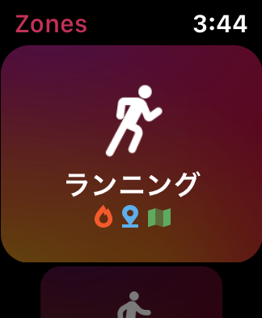
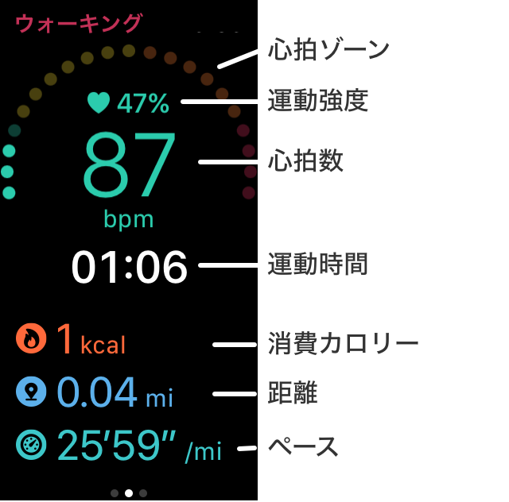
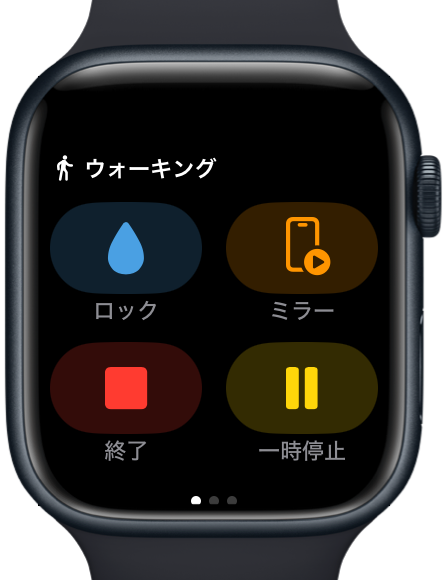
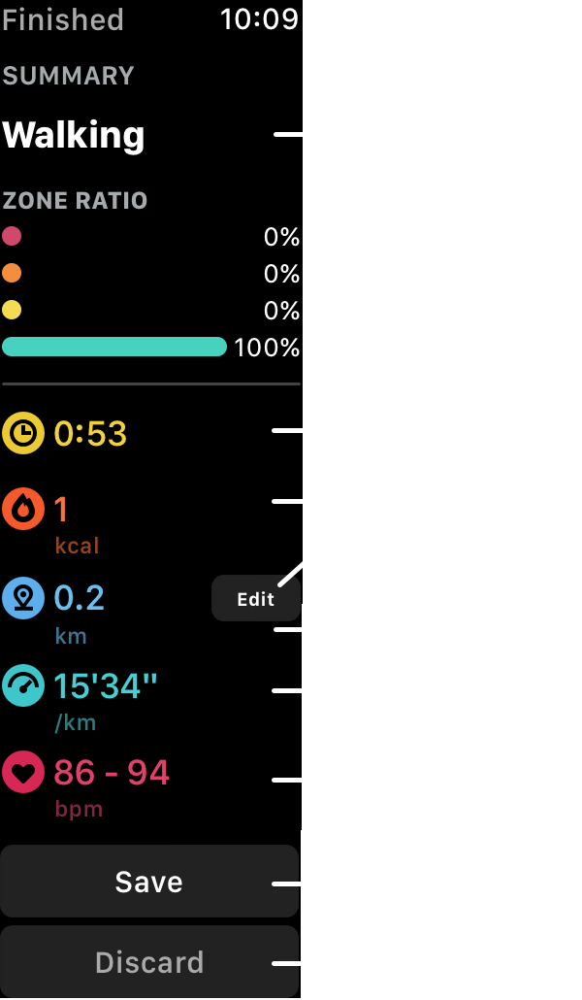

ヘルプ
ワークアウトの測定
- Apple Watchで、Zonesアプリを起動します。
-
ワークアウトの種類を選び、タップして開始します。

最近開始した種類がリスト上に表示されます。
スワイプで削除が可能です。（watchOS 6 以上が必要)
- 実行中は、心拍ゾーンや心拍数などが表示されます。縦スクロールすると、距離、消費カロリーなどが表示できます。

- 横スクロールの1ページ目に、「終了」ボタンがあります。また、画面長押しでもボタンを表示できます。

「一時停止」ボタンは、ランニング時で、自動停止の設定の場合は表示されません。
「ウォーターロック」ボタンは、watchOS 4で、Series 2以上の耐水性のあるデバイスで表示されます。
watchOS 4以上の場合、Digital Crown とサイドボタンを同時に押すと、一時停止/再開 が行えます。
- 終了時、しきい値以上の心拍ゾーンだった場合には、回復心拍数の測定が始まります。
この画面の一番下にあるキャンセルボタンで、この測定をキャンセルすることができます。

- 終了すると、結果画面が表示されます。
運動時間が30秒より短い場合は、キャンセルになり、この画面は表示されません。

- 「保存」ボタンを押して、保存してください。
終了後、1分以上経過すると自動的に保存されます。自動保存後は「閉じる」ボタンのみ表示されます。